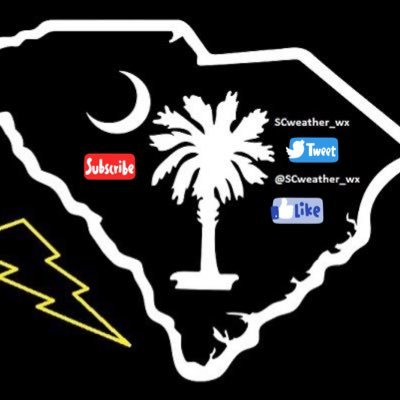
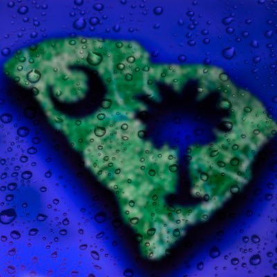

Our Current Partners (CONCEPT!!!)
Local Yokel WeatherRegion:Southwestern Mountains of NC |
Charleston WeatherRegion:Charleston, SC & Surrounding Areas |

South Carolina WeatherRegion:Columbia, SC and Surrounding Areas |
Asheville WeatherRegion:Mountains of NC |

Pee Dee WeatherRegion:Florence, SC and Surrounding Areas |
Foothills Action NetworkRegion:Foothills of Western NC |